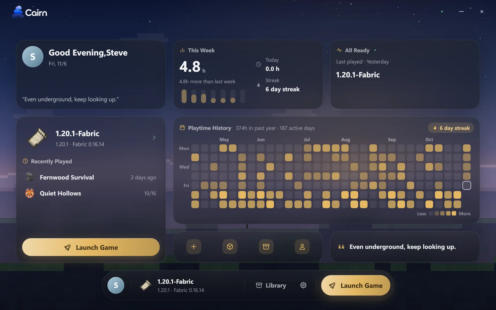
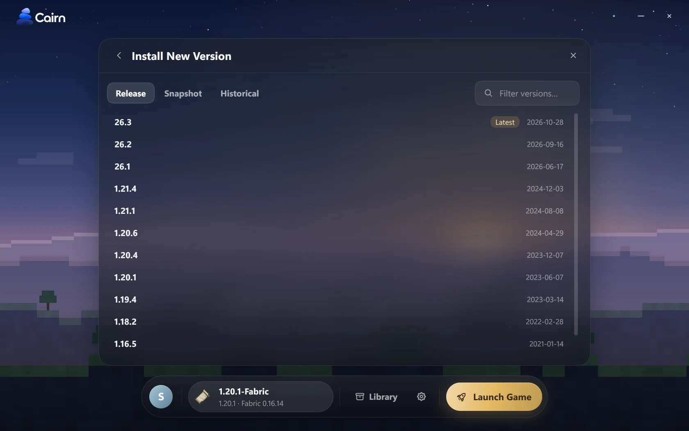
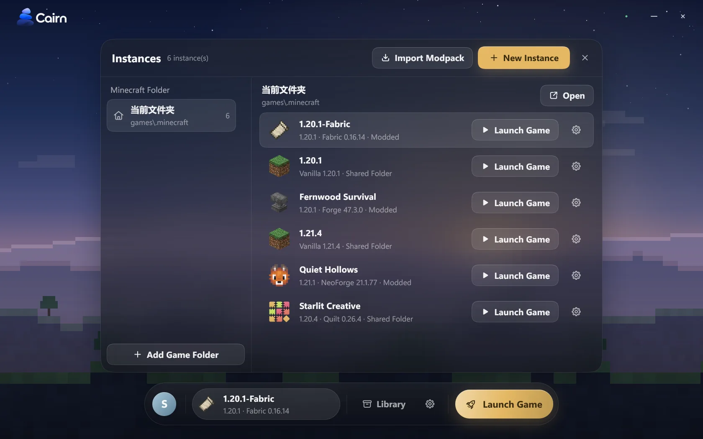
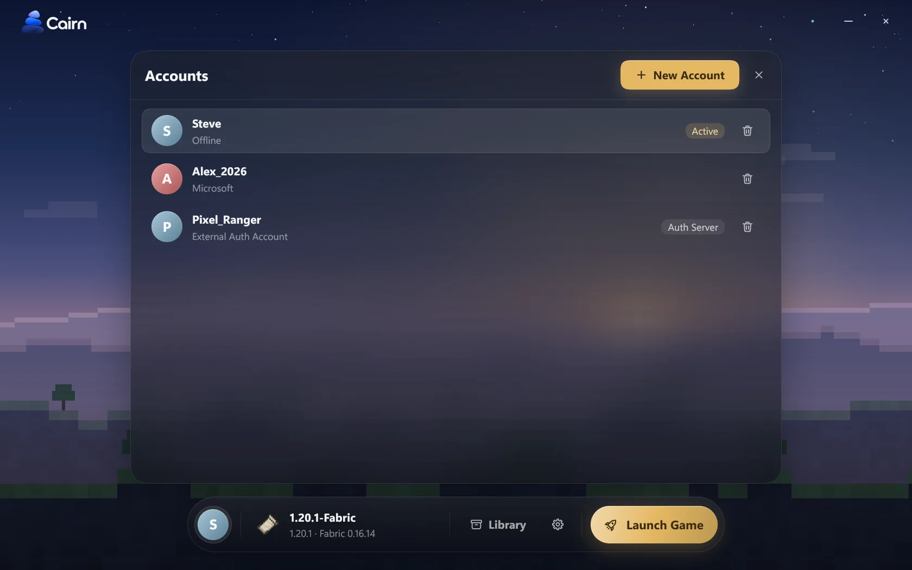
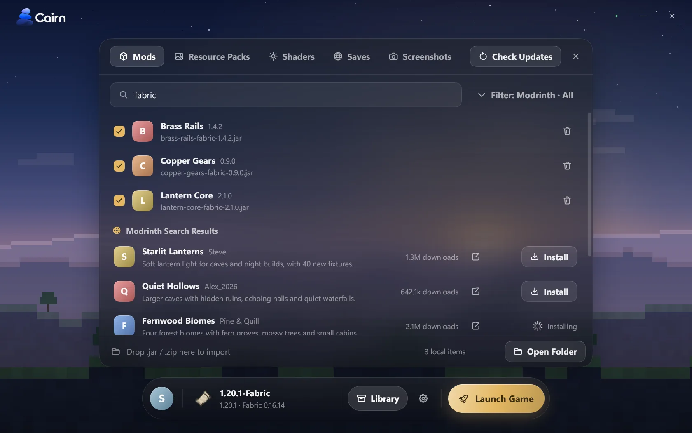
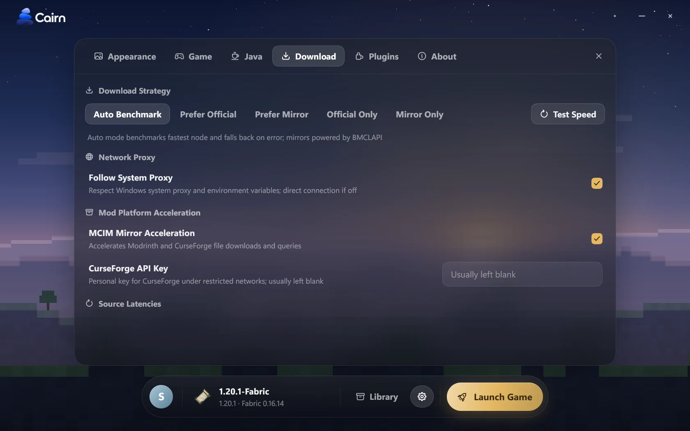
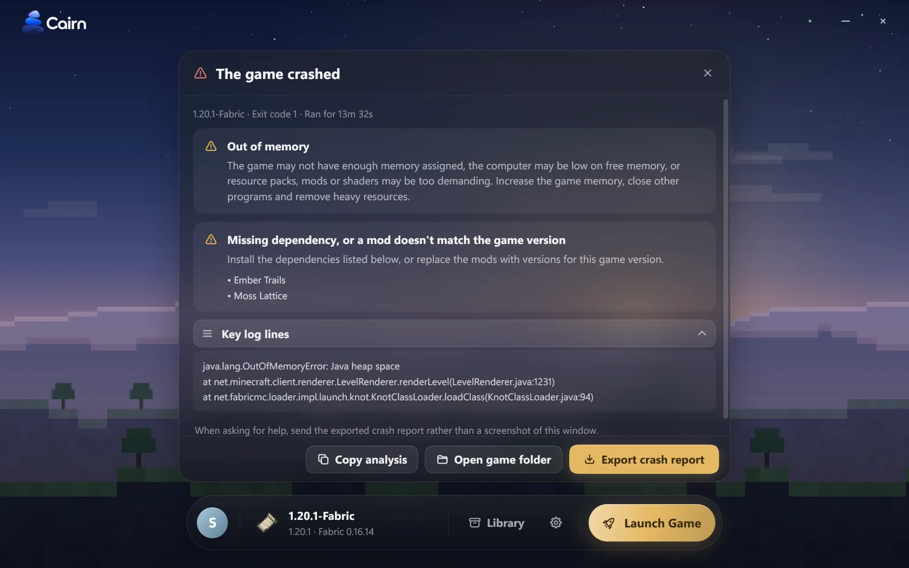
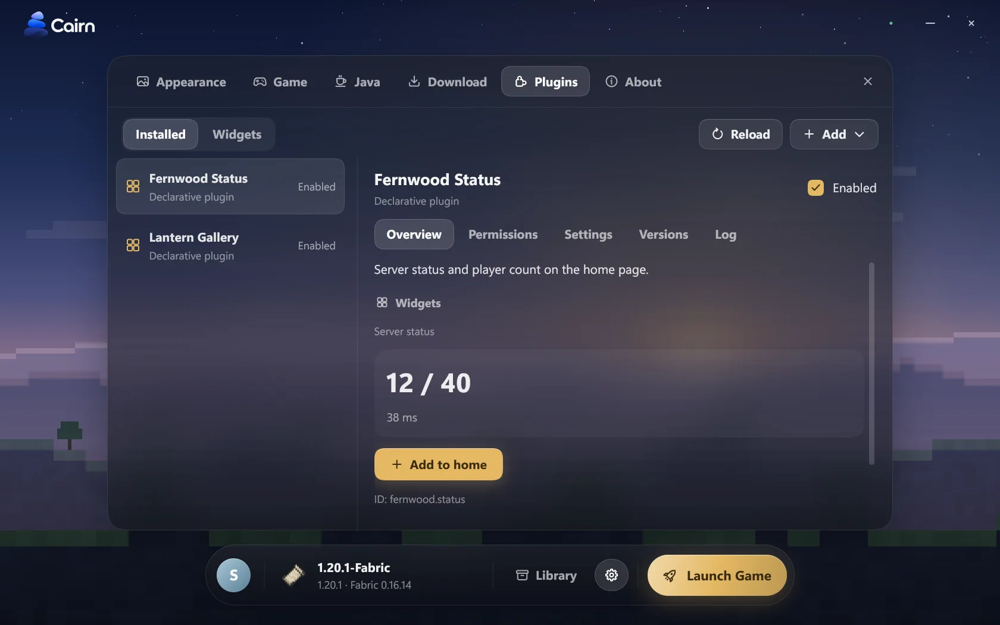
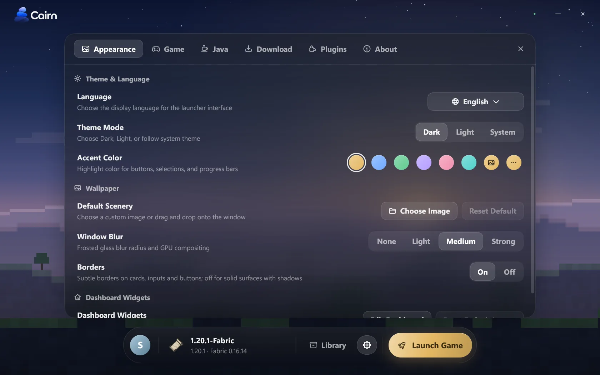

Pure, elegant, and modern Minecraft launcher
Written in Rust and drawn by itself. Installing, accounts, Java, downloads, mods and crash analysis, in one window.
Windows 10 or newer · Open source · Unofficial third-party launcher

Works with the ecosystem you already use
- Fabric
- Quilt
- Forge
- NeoForge
- OptiFine
- Modrinth
- CurseForge
- BMCLAPI
- MCIM
- Microsoft
- LittleSkin
- MultiMC / Prism
Cairn is a native program written in Rust. The interface is not a web page: it is drawn by cairn-ui, a GUI library developed in the repository, and the blur and glass effects are composited on the GPU.
- No JVM, no embedded browser engine
There is no Java virtual machine and no Chromium or WebView in the launcher process. A release build is a single exe of about 9.6 MiB.
- A bespoke GUI stack that paints every pixel
Engineered from the ground up:
tiny-skiapowers anti-aliased 2D vector drawing,cosmic-texthandles complex typography,taffycalculates flexible layouts, andwinitmanages windows. With OpenGL 3.3 the GPU composites blur and glass; without it the window falls back to software rendering. - The launcher is native; the game still needs Java
We eliminated JVM overhead from the launcher itself, but Minecraft remains a Java application. Cairn automatically determines the required Java version for any game version and downloads official Mojang runtimes if none is found locally.
- Plugins run in their own process
Extensions are written in JavaScript and executed by QuickJS-NG inside a separate host process. Network, filesystem, or command-line permissions require explicit confirmation upon enablement; a broken plugin cannot take the launcher down.
cairn-uiBespoke widgets · Reactive state · Fluid themes & motiontaffyHigh-performance Flexbox and Grid layout enginecosmic-textCross-platform multilingual text shaping & layouttiny-skiaPure CPU anti-aliased 2D vector rendererwinit · OpenGLNative windowing & GPU glass compositing (software fallback)
The philosophy of a cairn: each stone placed with purpose, without an ounce of excess.
A cohesive ecosystem in one serene window
Taming version dependencies, multi-mirror downloads, account security, and crash diagnostics with quiet engineering precision.
Modular, customizable dashboard
Quick launch, shortcuts, digital clock, playtime curves, and dynamic activity heatmaps at a glance. Easily customize or craft custom widgets via clean YAML definitions.
Every official release and loader
From historical alphas to the latest weekly snapshots (including the new calendar-based versions). One-click installation for Fabric, Quilt, Forge, NeoForge, and OptiFine.

Instances your way
Organize game instances alongside the default .minecraft directory or as standalone instances sharing a global asset pool. Includes five isolation presets and automatic one-click import from existing launchers.

Multi-source authentication & encrypted storage
Seamless Microsoft OAuth device-code sign-in, custom Yggdrasil external authentication (e.g., LittleSkin), and offline profiles. Tokens are encrypted with Windows DPAPI. An offline account is only a local player-name profile; it is not a game license.

Curated modding & seamless packs
Browse Modrinth and CurseForge with automated dependency resolution and update alerts. Full support for importing and exporting .mrpack, CurseForge, and MultiMC / Prism modpacks.

Adaptive multi-source download engine
Combines Mojang, BMCLAPI, MCIM, and custom mirrors with real-time latency probing and automatic failover. Features dynamic concurrency throttling, streaming SHA-1 verification, and chunked resumable downloads.

Localized crash diagnostics
When the game exits abnormally, Cairn analyzes game logs, crash reports, and JVM hs_err files locally to explain the root cause in plain language, exporting sanitized bundles with sensitive tokens masked.

Extensions: widgets, panels, plugins
Declarative YAML widgets and panels alongside JavaScript plugins running in QuickJS-NG inside a separate process. Network, file and program access needs a permission you confirm. Start with --no-plugins to skip them all.

Refined visuals & multilingual fidelity
Light and dark themes, customizable accent hues, wallpaper with frosted depth, and smooth HiDPI scaling. Built-in support for Simplified Chinese, English, and Japanese.

Verifiable Performance
60ms
32ms
≈14MiB
9.6MiB
Benchmark hardware and methodology: Test rig: Intel Core i7-14700F (20 cores, 28 threads), 32 GB RAM, NVMe SSD, Windows 11 Pro for Workstations (Build 26200). Each benchmark is executed in a dedicated fresh process with process creation overhead included, under warm OS file cache conditions. Cold-disk reads were not measured. These numbers come from core operations of the command-line tool cairn.exe, not from the graphical interface; its startup time and overall memory use have not been measured yet, so there are no numbers for them here.
Your data stays on your computer
Each point below comes from the Privacy Policy (version 1.0, effective 2026-11-06), which was written from the source code of version 0.1.0.
Legal notice on accounts and game licenses
An offline account is merely a local player name profile and neither constitutes nor replaces a genuine Minecraft game license. Under Chapter 3 of the Terms of Service: users residing outside mainland China must first authenticate through Microsoft's official flow with an account owning Minecraft Java Edition before creating offline profiles; users residing in mainland China are strongly urged to hold a valid license.
- No telemetry, usage statistics, crash uploads, ads or behavioral tracking
The launcher uploads nothing to a server operated by the developer, and the developer does not hold your data.
- Clean portable storage by design
All accounts, configurations, and instances reside by default in the adjacent
.cairnfolder (configurable viaCAIRN_HOME). Delete the folder and they are gone. Game folders such as.minecraftare a separate matter: back up your saves before you delete anything. - Network requests exist to carry out your actions
Logins, version manifests, and asset downloads connect straight to Microsoft, Mojang, Modrinth, CurseForge, or your configured mirrors, without any developer-operated middleman proxy.
- Tokens are encrypted; other files are plain text
On Windows,
accounts.dat, which holds your tokens, is encrypted with DPAPI.config.jsonand the other files are plain text. - No automatic update
The launcher never checks for or installs its own new versions. Come back here or to the repository when you need one.
Download portable release or build from source
Natively supporting Windows 10 and newer. Cairn is strictly portable—no installer wizard required, and all application state remains cleanly encapsulated within the .cairn folder.
- Open source; see the repository for details. The GUI library
cairn-uiis dual licensed under MIT or Apache-2.0. - No automatic update: come back here or to the repository when you need a new version.
- Requirements for building from source: Windows 10 or newer, and Rust 1.91+ (2024 Edition).
cargo run -p cairn-app # Run the desktop launcher
cargo build --release -p cairn-app # Build target\release\CairnLauncher.exe
cargo build --release -p cairn-cli # Build target\release\cairn.exe